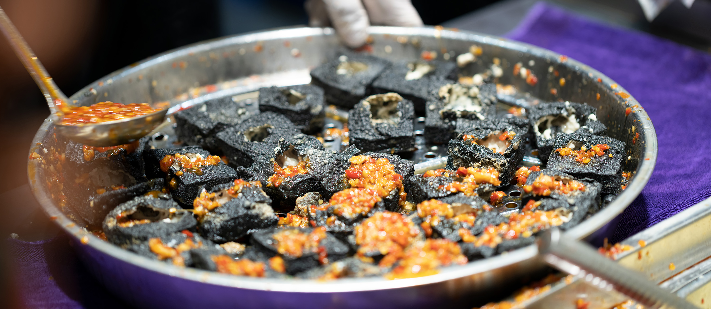
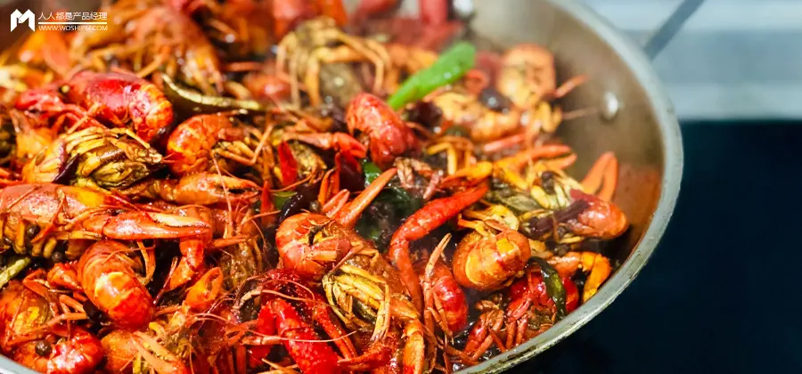
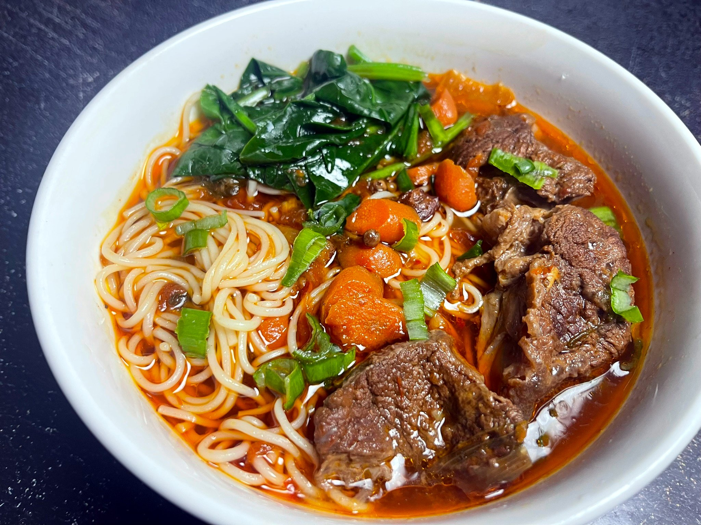

Changsha Stinky Tofu is the city’s most famous snack— a polarizing but beloved dish that’s been around for over 300 years. Contrary to its name, the “stink” is mild (from fermented soybeans), and the taste is crispy, savory, and slightly spicy. Authentic Changsha stinky tofu is made by fermenting tofu blocks in a brine of soybeans, chili, and spices for 7–10 days, then deep-frying them till the outside is golden and crunchy, and the inside is soft and creamy.
Outside: Crispy, slightly oily, with a toasty flavor from frying.
Inside: Silky, tender, and rich with umami from the fermentation process—no bitter aftertaste, just a subtle savoriness that lingers.
Toppings: Chopped scallions add freshness, while pickled radish brings a tangy crunch that balances the tofu’s richness; the chili sauce adds a warm, gradual heat (not overwhelming) that ties all flavors together.
Pairing: Wash it down with a cold glass of “suanmeitang” (plum juice)—the sweet-tart drink cools the palate and complements the tofu’s savoriness.
Street Stalls (Huangxing Road Pedestrian Street): 5–8 CNY/small portion (5–6 pieces); 12–15 CNY/large portion (10–12 pieces).
Fire Palace (Historic Restaurant): 18–25 CNY/serving (premium tofu, larger portion, with extra toppings like sesame seeds).
Convenience Stores: 3–5 CNY/pack (pre-fried, microwaveable—great for a quick snack).

Spicy Crayfish, or “xiǎolóngxiā,” is Changsha’s summer obsession—every street corner and restaurant bursts with the aroma of chili, garlic, and crayfish from May to September. Locals gather in groups to peel and eat the crustaceans, washing them down with cold beer—a quintessential Changsha nightlife experience.
Shell & Sauce: The shell is coated in a glossy, spicy sauce—rich with garlic and star anise, with a slow-building heat that warms the throat (not burning).
Meat: Tender, sweet, and juicy—fresh crayfish have a clean, briny flavor that pairs perfectly with the bold sauce.
Aroma: The scent of chili and garlic is irresistible—even if you’re not hungry, the aroma will draw you in.
Street Stalls (Pozi Street): 68–88 CNY/small portion (about 20 crayfish); 128–158 CNY/large portion (about 40 crayfish).
Seafood Restaurants: 158–228 CNY/serving (larger crayfish, premium sauce with extra spices).
Summer Night Markets: 5–8 CNY per crayfish (sold individually for small appetites).

Beef Noodle Soup with Chili Oil is Changsha’s go-to breakfast—locals line up at stalls before 9 AM to get their fix. It’s a simple but hearty dish: thin, chewy wheat noodles in a rich beef broth, topped with tender sliced beef, pickled mustard greens, and a drizzle of bright red chili oil.
Broth: Clear, rich, and savory—packed with beef and spice flavors, with a hint of sweetness from the long simmer.
Noodles: Thin, chewy, and slippery—they soak up the broth, so every bite is flavorful.
Beef: Tender, thinly sliced, and seasoned with soy sauce—no tough, stringy bits.
Breakfast Stalls (Downtown): 8–12 CNY/bowl (generous portion, with extra beef for +3 CNY).
Time-Honored Shops (e.g., “He De Xing”): 15–20 CNY/bowl (premium beef, homemade noodles, and richer broth).
Convenience Stores: 6–8 CNY/bowl (instant version, good for a quick meal).